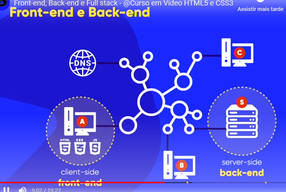
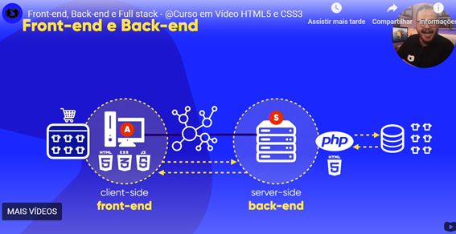
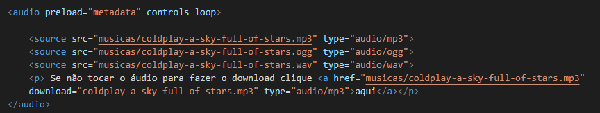

A Internet é um vasto conjunto de redes de computadores interconectadas, e sua origem remonta à década de 1960, quando pesquisadores começaram a trabalhar em formas de conectar computadores para compartilhar informações. Aqui estão alguns dos marcos principais no desenvolvimento da Internet:
Assim, a Internet surgiu a partir de uma série de inovações tecnológicas e iniciativas colaborativas, inicialmente voltadas para a pesquisa científica e militar, mas que foram moldando o que hoje é uma ferramenta essencial e onipresente na sociedade moderna.
HTTP (Hypertext Transfer Protocol) é o protocolo de comunicação utilizado na World Wide Web (WWW) para a troca de dados entre um cliente (geralmente um navegador de Internet, como o Google Chrome ou o Mozilla Firefox) e um servidor (onde os sites estão hospedados).
Em termos simples, o HTTP é o conjunto de regras que define como as informações (como páginas da web, imagens, vídeos, etc.) são enviadas e recebidas entre o seu computador e o servidor de um site.
Como funciona o HTTP?
Quando você acessa uma página da web, o seu navegador (cliente) envia uma solicitação (requisição) HTTP para o servidor que hospeda o site. O servidor, por sua vez, processa a solicitação e envia de volta a resposta (a página solicitada, por exemplo), também através do HTTP. Esse processo de requisição e resposta é como os dados viajam pela web.
Exemplo de comunicação HTTP:
Tipos de requisições HTTP
Existem diferentes tipos de requisições HTTP, sendo os mais comuns:
HTTP e a segurança: HTTPS
Uma versão segura do HTTP é o HTTPS (Hypertext Transfer Protocol Secure). Ele utiliza criptografia (por meio do protocolo SSL/TLS) para garantir que os dados trocados entre o navegador e o servidor estejam protegidos contra interceptações e ataques.
Em sites que utilizam HTTPS, você verá o ícone de cadeado ao lado do endereço, indicando que a conexão é segura. Isso é especialmente importante em transações financeiras, login em contas e outros contextos em que a segurança dos dados é crítica.
Resumo:
Em resumo, o HTTP é essencial para o funcionamento da web, tornando possível a navegação entre diferentes páginas e a comunicação entre servidores e clientes.
Vale salientar que https é o protocolo então fica a dica para não confindir com sub-domínio.
TLD pode ser GTLD( .com , .edu , .io , .gov) que são os genéricos o CCTLD (.br , .us , .uk ) que identificam países.
Além disso se lembre do foco de cada liguagem:
A seguir tem-se a estrutura básica de um aarquivo HTML:
<!DOCTYPE html>
<html lang="pt-br">
<head>
<meta charset="UTF-8">
<meta name="viewport" content="width=device-width, initial-scale=1.0">
<title>Document</title>
<link rel="stylesheet" href="estilos.css">
</head>
<body>
</body>
</html>
Desenvolvedor Front-End, Back-End e Full Stack são diferentes tipos de desenvolvedores, cada um especializado em áreas específicas do desenvolvimento de software. Aqui está um resumo sobre cada um deles:
Como mencionado antes, um desenvolvedor front-end é responsável pela parte visual e interativa de um site ou aplicativo, ou seja, tudo o que o usuário vê e interage diretamente. Eles usam tecnologias como:
O foco é criar uma experiência de usuário (UX) agradável e intuitiva, garantindo que a interface seja bonita, funcional e responsiva (adaptável a diferentes dispositivos).
O desenvolvedor back-end trabalha na parte do sistema que o usuário não vê, ou seja, na "lógica de negócios" e nos processos que ocorrem no servidor. Ele é responsável por garantir que os dados sejam processados corretamente, armazenados de maneira eficiente e que as interações com o banco de dados, autenticação de usuários e outras funcionalidades do servidor funcionem corretamente. Suas principais responsabilidades incluem:
O objetivo do desenvolvedor back-end é garantir que o sistema seja eficiente, seguro e que possa lidar com grandes volumes de dados e solicitações.
Um desenvolvedor full-stack é um profissional que possui habilidades tanto em front-end quanto em back-end. Ele é capaz de trabalhar em todas as camadas de um sistema, desde a interface com o usuário (front-end) até a lógica de servidor e banco de dados (back-end). Um desenvolvedor full-stack é um profissional mais versátil, que pode criar e manter uma aplicação de ponta a ponta.
As habilidades típicas de um desenvolvedor full-stack incluem:
O desenvolvedor full-stack é ideal para equipes menores ou em startups, onde a versatilidade e a capacidade de gerenciar diferentes partes de um projeto são essenciais.
Resumo:
Cada um desses papéis é fundamental para a construção de uma aplicação web ou móvel, e a escolha entre eles depende das necessidades do projeto.
Front-end e Back-end
 Full Stack

<h1></h1> ou <h2></h2> ou <h3></h3> ou <h4></h4> ou <h5></h5> ou <h6></h6> ppaara títulos
<p></p>
é utilizado para paarágrafosPara colocar símbolos tem que saber o código ou para colocar emojis tem que saber o site que tem o código hexadecimal. O site é Emojipedia
<link rel="shortcut icon" href="pao.ico" type="image/x-icon">
Serve para colocar um ícone de favoritos, basta mudar o href
<img src="https://logospng.org/wp-content/uploads/javascript.png" alt="Logo JavaScript"> serve para colocar uma imagem pode colocar o link da imagem ou pode puxar dos próprios arquivos, em src coloca onde está a imagem e alt coloca um texto alternativo para aparecer caso a imagem não aparece por algum problema. Assim terá pelo menos uma descrição do qua seria a imagem.
<b></b> negrito <strong></strong> negrito para destacar algo importante
<i></i> itálico <em></em> itálico para marcar algo importante
<mark></mark> marca texto amarelo...mas pode ser alterado com CSS
<small></small> letras pequenas
<del></del> para dizer que o texto foi excluído... geralmente aparece em textos de direito
<Ins></Ins> para dizer que um texto foi inserido
<u></u> tag para sublinhar mas não é semântica
<sup></sup>Para escrever coisas como: X²
<sub></sub>Para escrever coisas como: X2
<code></code> Para criar testos mono espaçados principalmente para códigos-fonte
<pre></pre> deixa o texto como você escreveu no html
<q></q> para colocar uma citação mais simples pequena
<bloquecode cite=””www.bbc.com></bloquecode> serve para criar citação com espaço citações mais longas além de pode colocar de onde tirou CITAÇÃO através de cite=""
<abbr title=""></abbr> Serve para colocar o significado de abreviações que são mostradas numa caixinha de texto quando o mouse passa em cima
<bdo dir="rtl"></bdo> serve para inverter o texto selecionado
<ol>
<li></li>
</ol> são listas ordenadas
<ul>
<li></li>
</ul> são listas não-ordenadas
-----
<h2>Lista de Definições<h2>
<dl>
<dt>HTML</dt>
<dd>Liguagem de Marcação para a criação de um site.</dd>
</dl>
Para abrir links internos usa-se <a href="https://www.youtube.com">Site Youtube</a></p>
Para abrir links externos usa-se <a href="https://www.youtube.com" target="_blank" rel="external" >Site Youtube</a></p>
#include <stdio.h>
int main(void) {
// Declara uma variável inteira chamada "idade"
int idade;
// Atribui o valor 25 à variável "idade"
idade = 25;
printf("Minha idade é: %d\n", idade);
return 0;
}
Como colocar áudio
o preload pode ter auto metadata e none, o auto carrega tudo, o metadata carrega algumas coisas importantes e o none nada inicialmente.
Ao digitar lorem no VSC automaticamente gera-se um um bla-bla-bla para colocar como texto para ver como fica o site.
Existe a tag <address></address> para dizer que aquilo é um endereço.
nas listas é póssível dizert o tipo e de onde começa a listaa

Aancoras ppara o proprio site. No next é indicado que vai pra ppóxima páginaa e o prev ppaara dizer que vcai voltar a página.

Como fazer download de arquivos.

Como colocar imagens e que se reajustem dependendo do tamnanho da tela.

Como colocar vídeos no site.